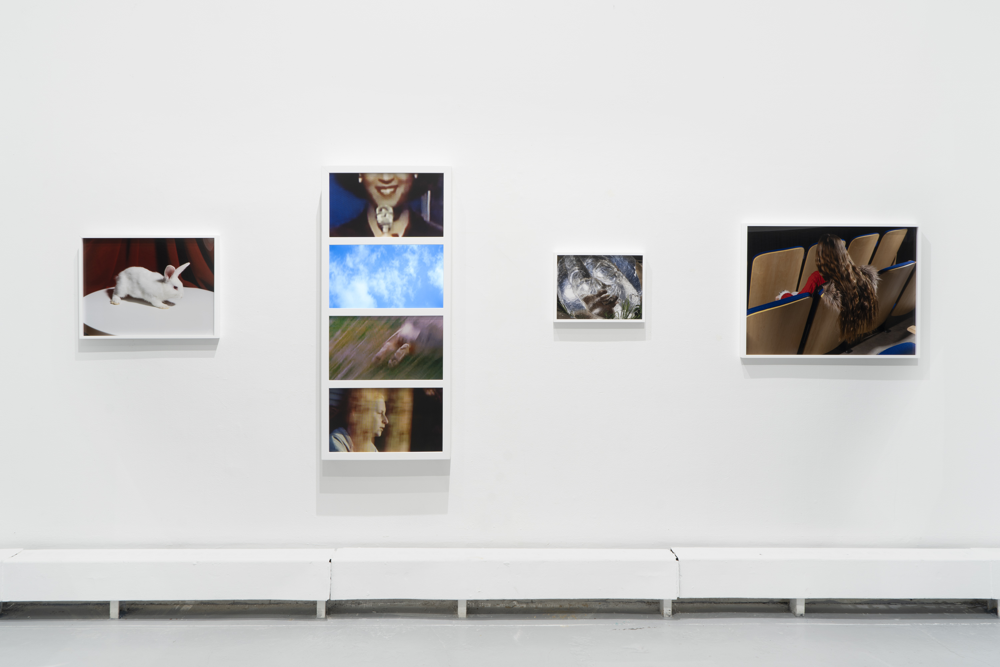
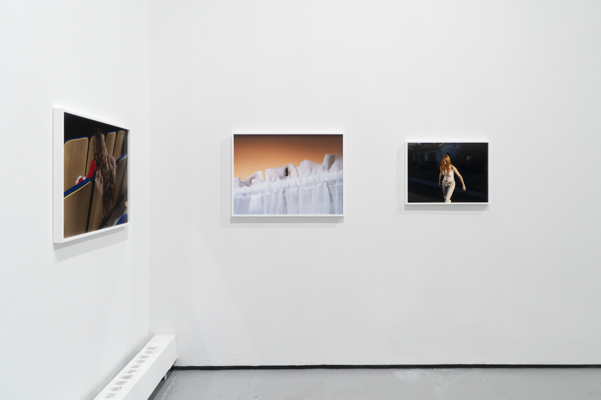
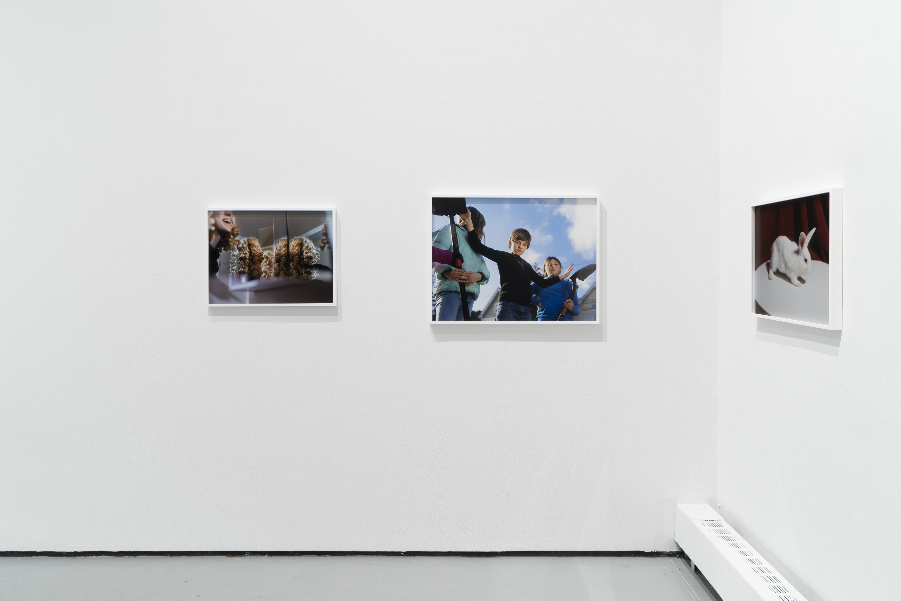
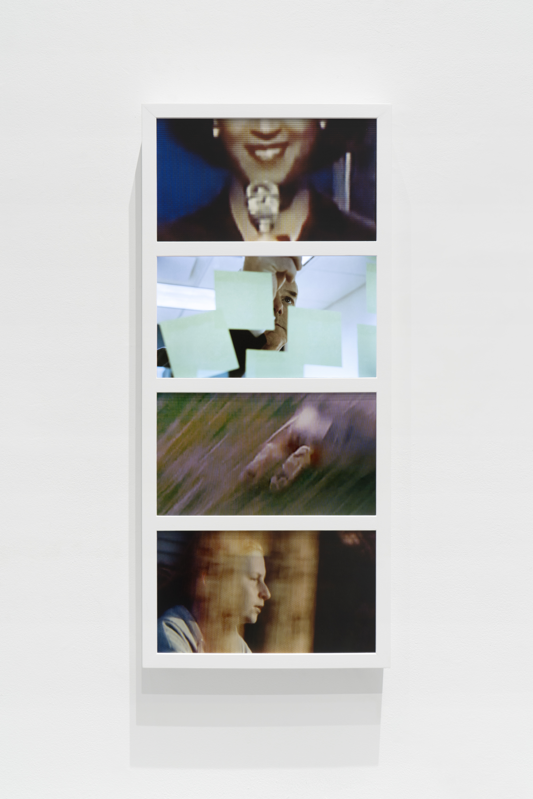
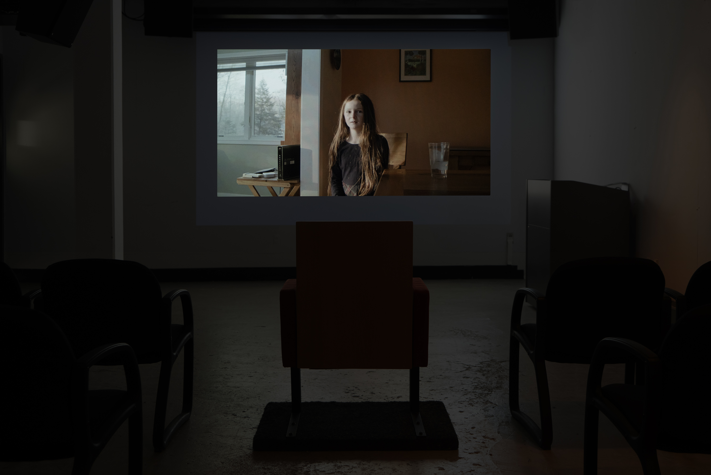
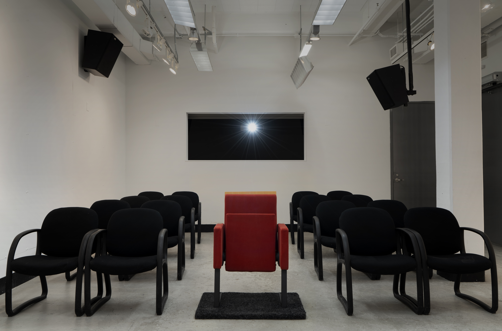

Installation view at Yale School of Art, 2022.
   A Rabbit Appears in an Empty Box, 2022, (3) archival pigment prints and (1) HD monitor.
Installation view at Yale School of Art, 2022. Film pictured: The Baldwin Middle School Talent Show, 2022, single-channel video with sound, 13:13.
Installation view at Yale School of Art, 2022.
“We’ll it’s a mess ain’t it Sheriff..?”
“If it ain’t it’ll do til the mess gets here.”
—No Country for Old Men, dir. Joel and Ethan Coen. 2007.
“The world's a mess it's in my kiss.”
—X, songwriters Exene Cervenka/John Doe; 1980.
Emily’s video work embraces the sort of vibrant mess that most movies (and documentaries) are eventually obligated to sort out. In her filmic equations: Memory and Play, Star and Extra, a commitment to Plot and a healthy appetite for Dream Logic are all interchangeable. In bringing an artist’s expansive curiosity to the craft and conventions of (increasingly) classical film and television forms, Emily’s appears less interested in critique, deconstruction, or experimental methods as unflinchingly committed to rediscovering and reactivating the near-alchemical intimacies that comprised the earliest film cultures and productions; the inspired urges and fresh scopophilic thrills…that find their roots and origins in what the first films (particularly those of the Brothers Lumiere) proved to be the two great and enduring subjects for the moving image: The look of people at play and the look of people at work. Emily has choices but at least half the thrill in her recent work is the sense of being in the hands of an artist/filmmaker/portraitist who finds so many more promising and gorgeously messier things to do with a subject (or medium) than merely choose them.